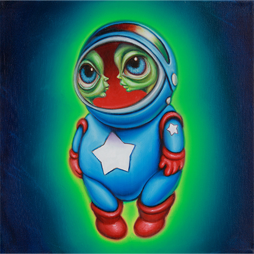

Exhibitions
Popaganda in Japan, Public Image. 3D, Tokyo, Japan, July 1–18, 2011.
Dum English, Opera Gallery, New York, New York, US, June 11, 2012.
Notes
This work appears in MechanicalDummyYT’s video documentation of Dum English.
This work also appears at 0:46 in Hi-Fructose Magazine’s YouTube video Turn the Page: The First Ten Years of Hi-Fructose Magazine.
No local still-frame image paths were supplied for the video appearances, so the source videos are retained here as linked documentation rather than as ancillary image cards.